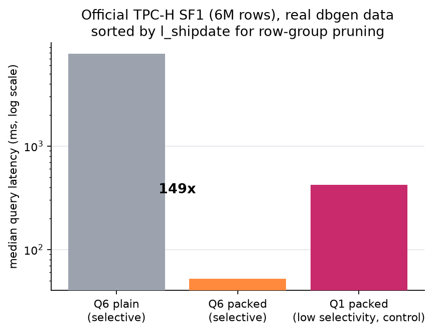
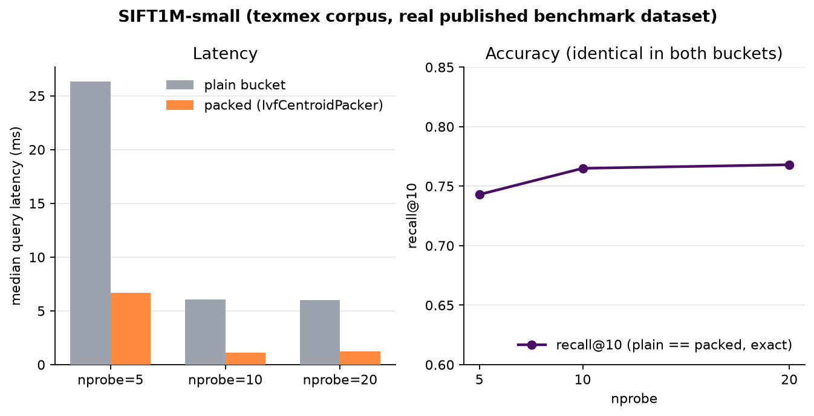
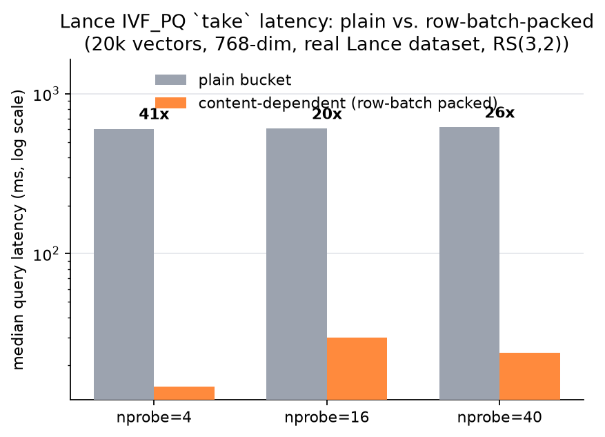

Measured against a live WarpDrive cluster (symmetric multi-node, gRPC fan-out, Reed-Solomon erasure coding), not a simulator.
Established tools used unmodified against their own data: Lance vector search, DuckDB's tpch extension (official dbgen + queries), and the texmex/SIFT1M-small corpus.
take latency
DuckDB's tpch extension generates the official TPC-H dataset (dbgen, sf=1 → 6,001,215 lineitem rows) and exposes the official 22 queries verbatim. Q1 and Q6 are the only two that touch solely lineitem. The exported Parquet file was physically sorted by l_shipdate before upload, a standard clustering technique (the same idea as Databricks' Z-ORDER), which is what makes Q6's one-year date predicate actually prunable via row-group min/max statistics.

Packed-bucket cost scales down with query selectivity (a stripe boundary to skip past); plain-bucket cost stays flat regardless of selectivity (no sub-object boundary to exploit at all).
| Query | Selectivity | Bucket | Median latency | Notes |
|---|---|---|---|---|
| Q6 | Selective (1-yr window + discount/quantity range) | plain | 7756.6 ms | no stripe concept, full reconstruction per range-GET |
| Q6 | Selective | packed | 51.9 ms | 149x faster, 252 range-GETs, avg 1.0 of 268 stripes touched/request |
| Q1 | Low selectivity (~96% of rows match) | packed only | 419.7 ms | control: 1074 range-GETs, avg 2.2 of 268 stripes/request |
Lance's own object_store::aws client pointed at two WarpDrive buckets holding the same dataset, same index, same unmodified query engine. One bucket stored plain (whole-object erasure coding), the other configured to use IvfCentroidPacker, which groups IVF partitions by k-means cluster id and bin-packs within each cluster.

Recall@10 identical between plain and packed at every nprobe level, checked against independently-verifiable ground truth.

The dominant cost was reconstructing the ~60MB data fragment file to materialize 10 result rows. Row-batch packing (20 rows/batch, no cluster metadata needed) gives the largest win measured so far.
| nprobe | plain (ms) | packed (ms) | speedup | recall@10 (plain) | recall@10 (packed) |
|---|---|---|---|---|---|
| 5 | 26.35 | 6.68 | 3.9x | 0.743 | 0.743 |
| 10 | 6.08 | 1.10 | 5.5x | 0.765 | 0.765 |
| 20 | 5.99 | 1.24 | 4.8x | 0.768 | 0.768 |
| nprobe | plain (ms) | packed (ms) | speedup |
|---|---|---|---|
| 4 | 603.5 | 14.7 | 41x |
| 16 | 604.9 | 29.8 | 20x |
| 40 | 616.9 | 24.0 | 26x |